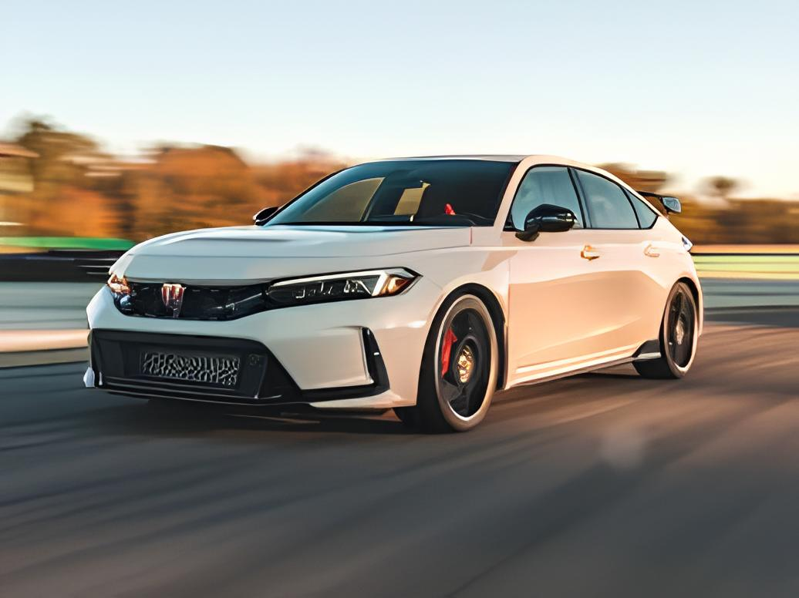
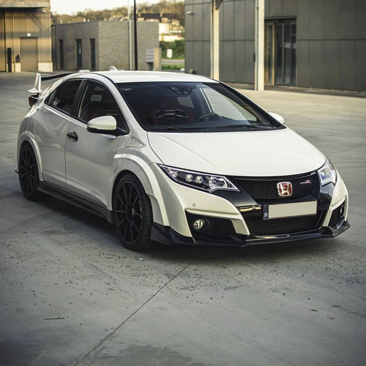

-

Civic Type-R -

Civic FK2 -
 Civic FK8
Civic FK8
-
 Civic FL5
Civic FL5


Description
Honda Civic Type-R adalah sport hatchback legendaris yang dikenal karena kombinasi luar biasa antara tenaga, teknologi balap, dan kenyamanan harian. Dibandingkan mobil lain di kelasnya, Civic Type-R menawarkan beberapa keunggulan utama:
1. Performa Mesin Tingkat Atas
Ditenagai mesin 2.0L VTEC Turbo, Civic Type-R menghasilkan tenaga besar dengan respon cepat. Teknologi VTEC membuat mesin tetap efisien di putaran rendah namun agresif di putaran tinggi. Banyak rival membutuhkan mesin lebih besar untuk menandingi performanya.
2. Handling Terbaik di Kelasnya
Civic Type-R sering disebut sebagai hot hatch FWD terbaik di dunia. Suspensi adaptif, limited-slip differential, dan chassis yang kaku membuatnya sangat stabil di tikungan. Banyak review menyebut handling-nya lebih presisi dari kompetitor seperti Golf R atau Focus RS.
3. Aerodinamika yang Benar-Benar Fungsional
Semua bagian body — spoiler, diffuser, ventilasi udara — bukan hanya gaya, tetapi dirancang untuk meningkatkan downforce dan pendinginan mesin. Ini memberi Civic Type-R stabilitas pada kecepatan tinggi yang sulit disaingi mobil sekelasnya.